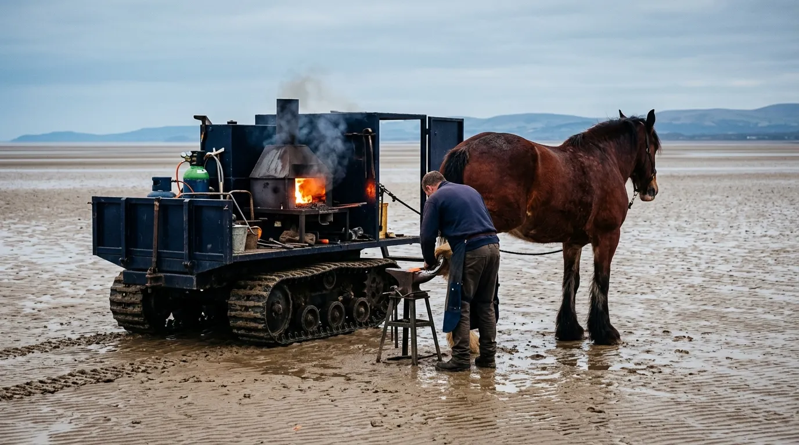
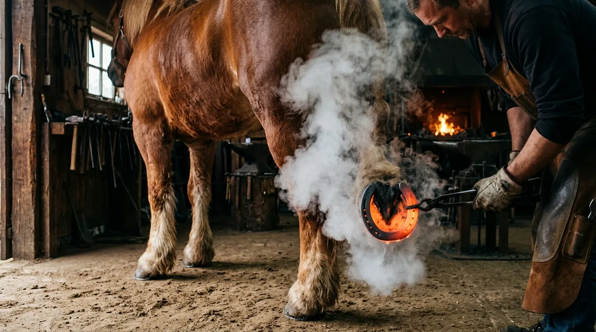
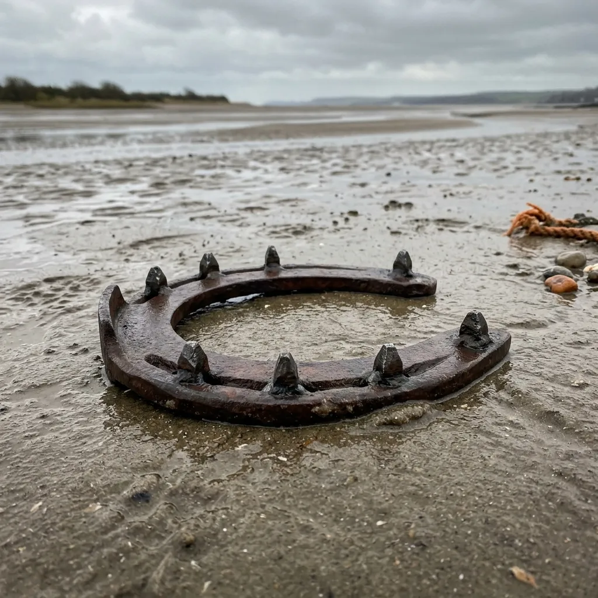
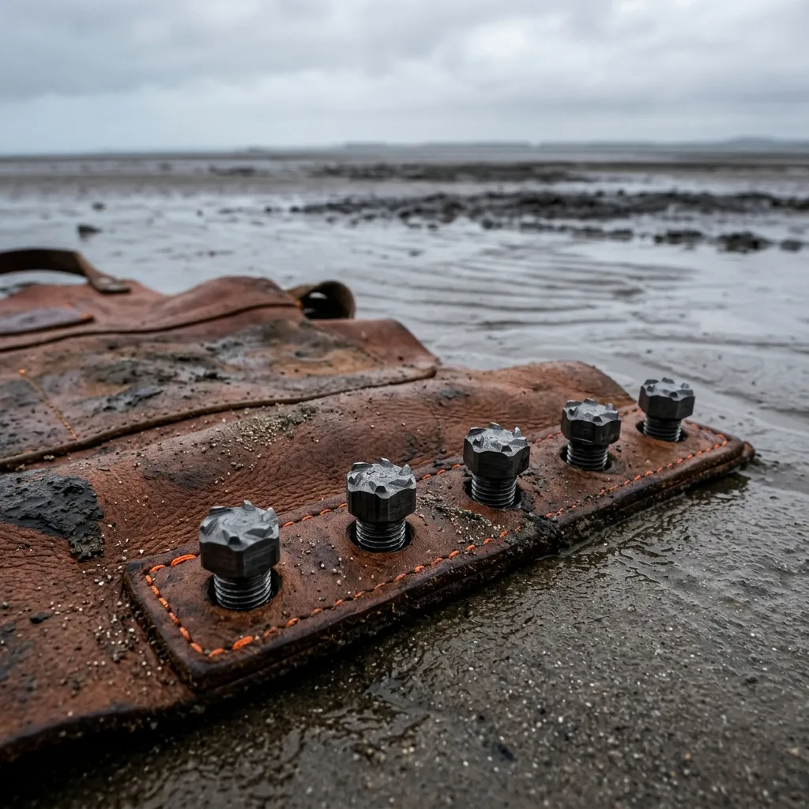
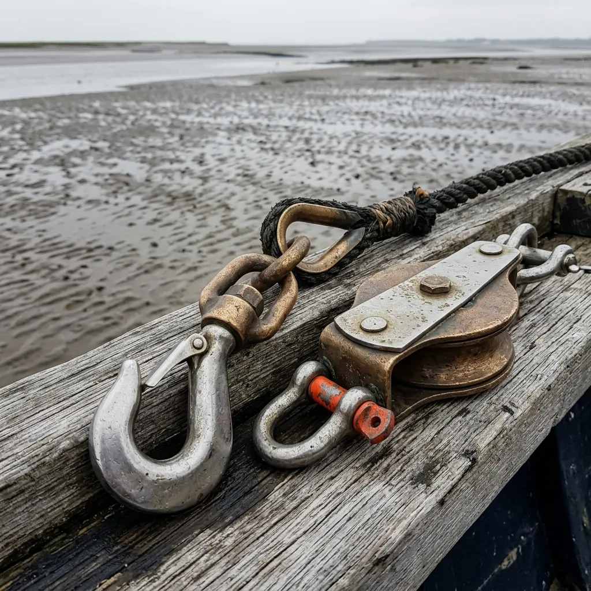
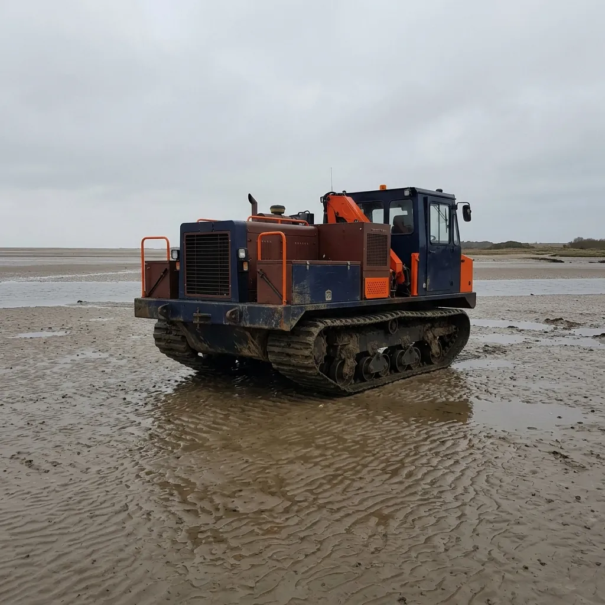

Intertidal Draft Horseshoeing Forged on Open Bay Sands
Mobile amphibious forge units delivering titanium-reinforced draft shoes and salt-marsh harness ironwork before the tide turns.
Conventional mild-steel horseshoes vacuum-lock into tidal silt and disintegrate under daily immersion in corrosive estuarine brine. We tow track-mounted gas forges directly onto the low-water sand flats of Morecambe Bay to fit custom wide-webbed draft shoes and tungsten grip caulkins on working teams. Every shoe is shaped, leveled, and nailed within a strict four-hour tidal window before the sea claims the sandbar.
Dispatch Mobile Forge SkiffThe 240-Minute Furnace: Farriery Against the Morecambe Bore
Shoeing a pair of one-tonne Shire horses on shifting intertidal sands is a discipline stripped of comfort. When the tide retreats across Morecambe Bay, it exposes ten square miles of channels, mudflats, and sandbanks for exactly four hours. If a cockle carter throws a shoe two miles out on the sands, you cannot lead the team back across flooded gullies; you bring the fire, the anvil, and the steel directly to the horse before the incoming bore tide cuts off the retreat.
Our mobile tenders run on low-ground-pressure tracks, carrying pressurized propane hearths, chilled sea-water quench tanks, and pre-machined marine alloy bar stock. We hammer out wide-webbed shoes with concave inner rims that shed wet, clinging silt instead of creating suction. Each shoe incorporates screw-threaded tungsten carbide mud studs that bite through slick green algae into hard-packed sand, preventing devastating tendon strains when pulling two-tonne loads through estuary gutters.
There is no room for leisurely workshop adjustments. The iron must be drawn, turned, and seated to the hoof while the salt wind howls across the flats. By the time the sea water laps against the wheels of our forge skiffs, both horses are shod, pinned, and pulling their carts back toward the limestone shore ahead of the racing water.

Primary Hardware Arsenal
Specialized, heavy-duty coastal draft gear built for severe marine silt and constant saltwater brine immersion. Engineered to withstand the crushing suction and friction of working estuaries.

Cartmel Wide-Web Draft Shoe
Our flagship laser-cut concave profile plate, weighing exactly 1.4 kg per shoe. The pronounced concave inner rim aggressively sheds clinging estuary mud, entirely eliminating the vacuum lock that typically strains tendons during heavy tidal hauling operations. Constructed from marine-grade titanium-steel alloy for maximum structural durability against submerged limestone rocks.

Screw-in Tungsten Cleats
Machined self-cleaning threaded mud caulkins forged from ultra-dense tungsten carbide. They pierce through slick algae layers into the underlying hard-packed quartz sand to provide unparalleled mechanical grip for commercial draft teams.

Marine Bronze Couplers
Solid 316 stainless steel and cast bronze trace couplers rigorously tested to 35 kN breaking strain, immune to the severe galvanic corrosion of daily seawater exposure.
Zinc Sacrificial Anodes
Bespoke anti-electrolytic zinc inserts that draw oxidative damage away from the steel nails, preserving hoof wall integrity by acting as a sacrificial galvanic barrier.
Pine-Tar & Alginate Barrier
A rigorous waterproof hoof dressing formulated from traditional Stockholm pine tar and locally harvested seaweed alginates. Creates an impermeable, antimicrobial shield against anaerobic saltwater thrush.
Rapid Bay Callout Tool Roll
A specialized, compact farriery kit rolled in heavy waxed canvas containing titanium clinchers, an aggressive diamond-cut rasp, and a hardened steel hoof knife for instant on-sand pathology corrections during emergency tidal deployments.
Tidal Anvil Deployment Protocol
Extreme logistical timing dictated entirely by astronomical tide charts. Every forge operation is executed against the clock, governed strictly by the retreating ebb and the impending flood bore.
Low-Water Skerry Navigation
As the ebb tide clears the salt marshes, our tracked amphibious forge skiffs roll out onto the exposed sands. We navigate shifting gullies and treacherous silt deposits to reach stranded or scheduled cockle cart teams up to three miles off the mainland coast.
On-Sand Hoof Trimming & Pathology
Once deployed, our farriers rapidly clear packed mud and assess hoof pathology. We pare away necrotic tissue, clean out the collateral grooves, and establish a balanced, level bearing surface while the horse stands directly on the wet sand substrate.
Rapid Propane Hearth Shaping
Marine alloy bar stock is flash-heated in the pressurized propane hearth. The hot iron is shaped, drawn, and seated precisely to the hoof in a cloud of aromatic smoke, before being plunged into chilled sea-water quench tanks for immediate crystalline hardening.
Fast-Lock Cleat Setting & Evacuation
Nails are driven, clinched, and rasped smooth. Finally, the tungsten carbide mud cleats are torque-set into the threaded heel holes. The forge is instantly extinguished and secured just as the incoming tidal bore becomes visible on the horizon.
Estuary Metallurgy & Hoof Mechanics Matrix
Clear metallurgical proof that standard shoeing fails rapidly in marine muds. Our proprietary titanium-alloy plates are engineered to survive the brutal realities of daily intertidal immersion and heavy hauling.
| Performance Criteria | Standard Farrier Steel | Cast Aluminium Plates | Forge & Fallow Titanium-Alloy |
|---|---|---|---|
| Silt Suction Resistance | Poor (Creates severe vacuum lock) | Moderate (Prone to abrasive wear) | Exceptional (Concave shedding rim) |
| Brine Corrosion Rate | 1.2 mm / year | 0.8 mm / year (Rapid pitting) | 0.05 mm / year (Anode protected) |
| Stud Thread Shear Strength | 450 MPa | 210 MPa (Threads strip easily) | 980 MPa (Tungsten carbide inserts) |
| Hoof Wall Moisture Retention | High (Encourages severe thrush) | Moderate | Optimal (Pine-tar sealed) |
| Average Tidal Service Life | 3 to 4 Weeks | 2 Weeks | 8 to 10 Weeks |
Mobile Field Units & Coastal Syndicate Tiers
Commercial contract structures designed for independent cockle carters, commercial harvesting syndicates, and coastal rescue draft teams. We guarantee emergency tide-window coverage and scheduled spring-tide yarding.
Single Carters Pack
Designed for the independent estuary worker requiring robust and reliable traction. Includes a full set of Cartmel plates, emergency sandbar fitting during the scheduled tidal window, and a spare screw-in caulkin kit.
Select PackBay Harvester Syndicate
Comprehensive ongoing coverage for commercial harvesting fleets. Covers up to 6 draft teams with scheduled monthly low-tide resets on the sand, priority emergency callouts, and unlimited sacrificial anode replacements throughout the working season.
Book Syndicate CoverageCoastal Forestry Contract
Heavy-duty salt-marsh timber skidding shoeing tailored for extreme traction over slippery submerged root systems. Includes heavy-gauge marine harness hardware inspections and custom calk geometry based on specific woodland substrates.
Request QuoteBay Dispatches & Working Team Case Logs
Proven reliability under treacherous coastal conditions. When the tide turns, theoretical farriery means nothing. These are authentic field reports from the men and horses who work the flats daily.
"Before Forge & Fallow, my Clydesdale was pulling shoes weekly in the heavy Kent channel muds. The vacuum lock was tearing nails straight through the hoof wall. Since switching to their concave titanium plates, we haven't lost a shoe in two months, and the tungsten cleats bite right through the slick algae beds."
— Thomas H., Flookburgh Cockle Master
"Skidding wet timber out of the Arnside salt-marshes destroys standard ironwork in weeks. The salt just eats it alive. The sacrificial zinc anodes these lads fit have completely stopped the galvanic rot around the nail clinches, saving my team's feet during the brutal winter hauling season."
— Gareth W., Arnside Salt-Marsh Timber Contractor
"We threw a shoe two miles out on the Duddon flats with the tide due to flood in ninety minutes. The tracked forge skiff reached us in twenty, hot-fitted a replacement right there on the wet sand, and had us moving before the bore wave even hit the outer skerries. Incredible logistical execution."
— Captain E. Ross, Duddon Estuary Wildfowling Warden
Bay Horses Shod on the Sands
Lost Teams to the Incoming Tide
Minute Maximum Sand Deployment
Technical Farriery & Salt-Marsh FAQ
Authoritative farriery guidance for severe wet environments. We address the specific pathologies and mechanical challenges unique to intertidal draft work.
How do you prevent anaerobic canker in constant salt water?
We apply a heavy, waterproof pine-tar and copper-sulfate barrier paste under the shoe and leather pads. This completely seals the sole and frog from the aggressive anaerobic bacteria that thrive in deep, oxygen-deprived estuarine muds.
How do you manage hoof shrinkage from high salinity?
Constant exposure to hypertonic brine rapidly draws moisture out of the hoof capsule, causing contraction. We mandate bi-weekly applications of marine-grade alginate dressings to lock in essential moisture and maintain structural elasticity within the hoof wall.
What are the exact torque settings for tungsten studs?
For our heavy draft plates, tungsten carbide mud studs must be seated to exactly 35 Nm of torque. Over-tightening risks shearing the hardened threads, while under-tightening will lead to the stud vibrating loose during miles of heavy coastal carting.
Do you supply emergency field shoe pulling tools?
Yes. Every commercial syndicate is issued a heavy-canvas tool roll containing titanium clinchers and crease nail pullers. If a shoe becomes dangerously bent under a submerged rock, the carter can safely remove it on the sands to prevent severe tendon lacerations.
What is your operational travel radius?
Our tracked amphibious skiffs cover the entirety of Morecambe Bay, the Solway Firth saltings, and the Dee Estuary. As long as there is an accessible limestone slipway, we can deploy the forge within fifty miles of our Flookburgh base.
Do you operate winter night-tide forge operations?
Absolutely. During the lucrative winter cockle season, the low-water spring tides often fall in pitch darkness. Our forge skiffs are equipped with massive 10,000-lumen LED floodlight arrays powered by onboard generators to illuminate the sandbar workspace.
Dispatch Desk & Intertidal Booking Console
Immediate booking aligned with lunar spring and neap tide cycles. Do not delay your request; our forging windows are strictly limited to the four-hour low-tide exposure of the sand flats.
Forge Base:
The Salt-Gate Workshop
Flookburgh Sands, Grange-over-Sands
LA11 7LS
Emergency Comm:
VHF Channel 68
Direct Telephone Dispatch Available 24/7
